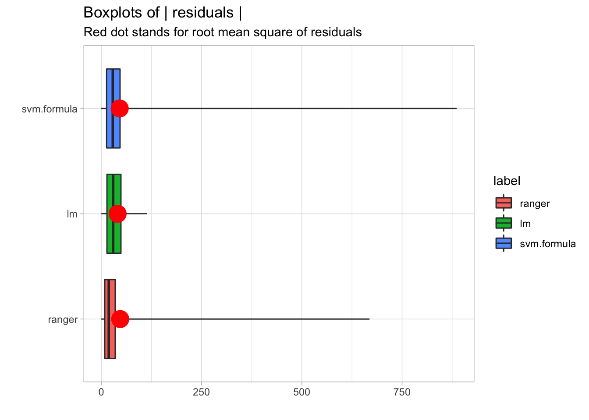
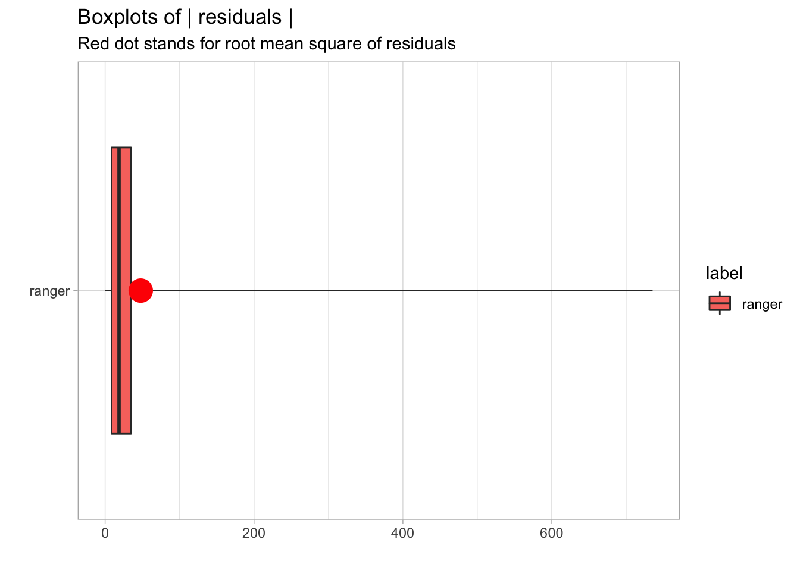
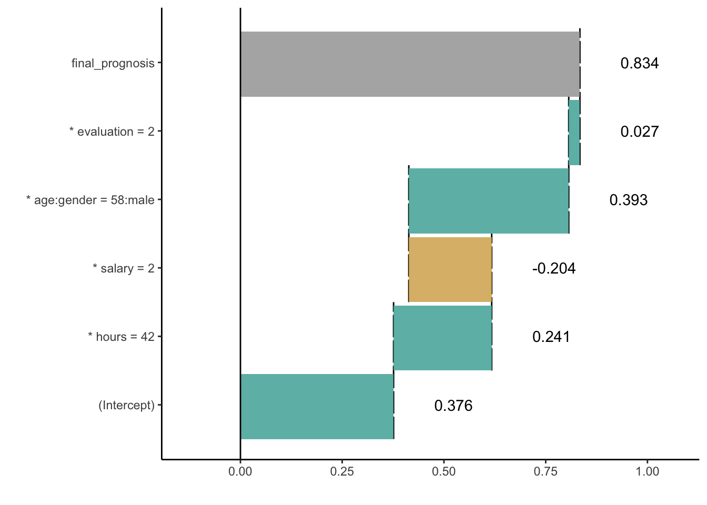

Chapter 7 Local model fidelity
Local fit
7.1 Pros and cons
Ceteris Paribus principle gives a uniform and extendable approach to model exploration. Below we summarize key strengths and weaknesses of this approach.
Pros
- Graphical representation of Ceteris Paribus profile is easy to understand.
- Ceteris Paribus profiles are compact and it is easy to fit many models or many variables in a small space.
- Ceteris Paribus profiles helps to understand how model response would change and how stable it is
- Oscillations calculated for CP profiles helps to select the most important variables.
- 2D Ceteris Paribus profiles help to identify pairwise interactions between variables.
Cons
- If variables are correlated (like surface and number of rooms) then the ‘everything else kept unchanged’ approach leads to unrealistic settings.
- Interactions between variables are not visible in 1D plots.
- This tool is not suited for very wide data, like hundreds or thousands of variables.
- Visualization of categorical variables is non trivial.
7.2 Code snippets for R
In this section we present key features of the ceterisParibus package for R (P. Biecek 2018b). This package covers all features presented in this chapter. It is is available on CRAN and GitHub. Find more examples at the website of this package https://pbiecek.github.io/ceterisParibus/.
Model preparation
In this section we will present examples based on the apartments dataset. See section TODO for more details.
## m2.price construction.year surface floor no.rooms district
## 1 5897 1953 25 3 1 Srodmiescie
## 2 1818 1992 143 9 5 Bielany
## 3 3643 1937 56 1 2 Praga
## 4 3517 1995 93 7 3 Ochota
## 5 3013 1992 144 6 5 Mokotow
## 6 5795 1926 61 6 2 SrodmiescieThe problem here is to predict average price for square meter for an apartment. Let’s build a random forest model with randomForest package (Breiman et al. 2018).
library("randomForest")
rf_model <- randomForest(m2.price ~ construction.year + surface + floor +
no.rooms, data = apartments)
rf_model##
## Call:
## randomForest(formula = m2.price ~ construction.year + surface + floor + no.rooms, data = apartments)
## Type of random forest: regression
## Number of trees: 500
## No. of variables tried at each split: 1
##
## Mean of squared residuals: 486333.9
## % Var explained: 40.78Model exploration with ceterisParibus package is performed in four steps.
- Create an explainer - wrapper around model and validation data.
Since all other functions work in a model agnostic fashion, first we need to define a wrapper around the model. Here we are using the explain() function from DALEX package (P. Biecek 2018c).
library("DALEX")
explainer_rf <- explain(rf_model,
data = apartmentsTest, y = apartmentsTest$m2.price)
explainer_rf## Model label: randomForest
## Model class: randomForest.formula,randomForest
## Data head :
## m2.price construction.year surface floor no.rooms district
## 1001 4644 1976 131 3 5 Srodmiescie
## 1002 3082 1978 112 9 4 Mokotow- Define point of interest. Certeris Paribus profiles explore model around a single point.
new_apartment <- data.frame(construction.year = 1965, no.rooms = 5, surface = 142, floor = 8)
new_apartment## construction.year no.rooms surface floor
## 1 1965 5 142 8## 1
## 2300.82- Calculate CP explainer
The ceteris_paribus() function calculates CP profiles for selected model around selected observation.
By default CP profiles are calculated for all numerical variables. Use the variables argument to select subset of interesting variables.
The result from ceteris_paribus()function is a data frame with model predictions for modified points around the point of interest.
cp_rf <- ceteris_paribus(explainer_rf, new_apartment,
variables = c("construction.year", "floor"))
cp_rf## Top profiles :
## construction.year no.rooms surface floor _yhat_ _vname_
## 1 1920 5 142 8 3075.374 construction.year
## 1.1 1921 5 142 8 3094.461 construction.year
## 1.2 1922 5 142 8 3078.283 construction.year
## 1.3 1923 5 142 8 3045.671 construction.year
## 1.4 1923 5 142 8 3045.671 construction.year
## 1.5 1924 5 142 8 3068.641 construction.year
## _ids_ _label_
## 1 1 randomForest
## 1.1 1 randomForest
## 1.2 1 randomForest
## 1.3 1 randomForest
## 1.4 1 randomForest
## 1.5 1 randomForest
##
##
## Top observations:
## construction.year no.rooms surface floor _yhat_ _label_
## 1 1965 5 142 8 2300.82 randomForest- Plot the CP profile
Generic plot() function plot CP profiles. It returns a ggplot2 object that can be polished if needed. Use additional arguments of this function to select colors and sizes for elements visible in the plot.

One of very useful features of ceterisParibus explainers is that profiles for two or more models may be superimposed in a single plot. This helps in model comparisons.
Let’s create a linear model for this dataset and repeat steps 1-3 for the lm model.
lm_model <- lm(m2.price ~ construction.year + surface + floor +
no.rooms, data = apartments)
explainer_lm <- explain(lm_model,
data = apartmentsTest, y = apartmentsTest$m2.price)
cp_lm <- ceteris_paribus(explainer_lm, new_apartment,
variables = c("construction.year", "floor"))Now we can use function plot() to compare both models in a single chart. Additional argument color = "_label_" set color as a key for model.

The calculate_oscillations() function calculates oscillations for CP profiles.
cp_rf_all <- ceteris_paribus(explainer_rf, new_apartment)
co_rf_all <- calculate_oscillations(cp_rf_all)
co_rf_all## _vname_ _ids_ oscillations
## 2 surface 1 633.9128
## 4 no.rooms 1 463.2525
## 3 floor 1 350.2849
## 1 construction.year 1 269.4548
And the what_if_2d() function calculates 2D CP profiles.
wi_rf_2d <- what_if_2d(explainer_rf, observation = new_apartment,
selected_variables = c("surface","floor", "construction.year"))
plot(wi_rf_2d)
References
Biecek, Przemyslaw. 2018b. CeterisParibus: Ceteris Paribus Profiles. https://pbiecek.github.io/ceterisParibus/.
Breiman, Leo, Adele Cutler, Andy Liaw, and Matthew Wiener. 2018. RandomForest: Breiman and Cutler’s Random Forests for Classification and Regression. https://CRAN.R-project.org/package=randomForest.
Biecek, Przemyslaw. 2018c. DALEX: Descriptive mAchine Learning Explanations. https://pbiecek.github.io/DALEX/.